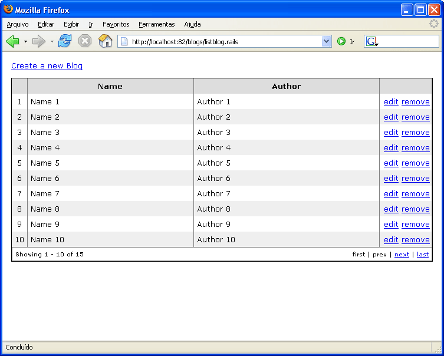
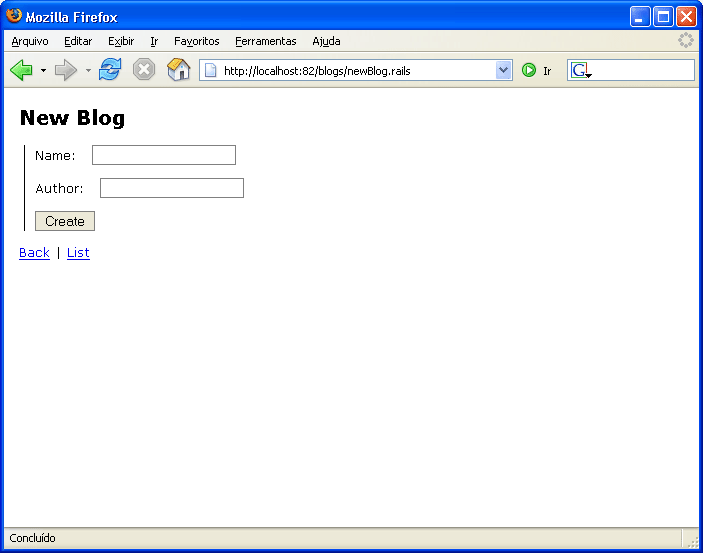
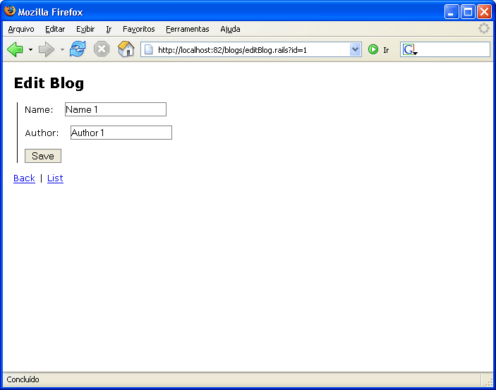
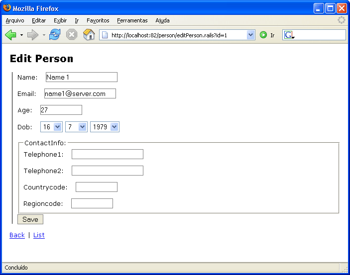

Table of contents
ActiveRecord Scaffold
This support still on its early stages and has been refactored twice. Nevertheless it's quite good to create prototype applications in no time. Its implementation allow you to override the views if you want, so the scaffolding will handle only the CRUD.
Using it
We are now assuming that you are familiar with ActiveRecord to some extend. Ising the Scaffolding in a web project that happens to be using ActiveRecord already is absolutely easy.
The required assemblies are:
- Castle.Components.Common.TemplateEngine
- Castle.Components.Common.TemplateEngine.NVelocityTemplateEngine
- Castle.MonoRail.ActiveRecordScaffold
- Castle.MonoRail.ActiveRecordSupport
- NVelocity
And the ActiveRecord assemblies:
- Castle.ActiveRecord
- Iesi.Collections
- NHibernate
- log4net
There is no additional configuration required. The configuration below if for those that jumped into this page and have never ever heard of ActiveRecord:
<configuration> <configSections> <section name="activerecord" type="Castle.ActiveRecord.Framework.Config.ActiveRecordSectionHandler, Castle.ActiveRecord" /> <section name="monorail" type="Castle.MonoRail.Framework.Configuration.MonoRailSectionHandler, Castle.MonoRail.Framework" /> </configSections> <monorail> <controllers> <assembly>TestScaffolding</assembly> </controllers> <viewEngine viewPathRoot="views" customEngine="Castle.MonoRail.Framework.Views.NVelocity.NVelocityViewEngine, Castle.MonoRail.Framework.Views.NVelocity" /> </monorail> <system.web> <compilation defaultLanguage="C#" /> <httpHandlers> <add verb="*" path="*.rails" type="Castle.MonoRail.Framework.MonoRailHttpHandlerFactory, Castle.MonoRail.Framework" /> </httpHandlers> </system.web> <activerecord isWeb="true"> <config> <add key="hibernate.connection.driver_class" value="NHibernate.Driver.SqlClientDriver" /> <add key="hibernate.dialect" value="NHibernate.Dialect.MsSql2000Dialect" /> <add key="hibernate.connection.provider" value="NHibernate.Connection.DriverConnectionProvider" /> <add key="hibernate.connection.connection_string" value="Data Source=.;Initial Catalog=test;Integrated Security=SSPI" /> </config> </activerecord> </configuration>
ScaffoldingAttribute
Now you can create a controller (or use an existing one) and add the ScaffoldingAttribute pointing to the an ActiveRecord class. Suppose you have the following an ActiveRecord class:
[ActiveRecord("Blogs")] public class Blog : ActiveRecordValidationBase { private int _id; private String _name; private String _author; [PrimaryKey(PrimaryKeyType.Native)] public int Id { get { return _id; } set { _id = value; } } [Property, ValidateNotEmptyAttribute] public String Name { get { return _name; } set { _name = value; } } [Property, ValidateNotEmptyAttribute] public String Author { get { return _author; } set { _author = value; } } public static void DeleteAll() { ActiveRecordBase.DeleteAll( typeof(Blog) ); } public static Blog[] FindAll() { return (Blog[]) ActiveRecordBase.FindAll( typeof(Blog) ); } public static Blog Find(int id) { return (Blog) ActiveRecordBase.FindByPrimaryKey( typeof(Blog), id ); } }
You can then create a BlogsController like this:
[Scaffolding( typeof(Blog) )] public class BlogsController : Controller { }
Now point your browser to your controller, and to an action called listblog.rails like
http://localhost/blogs/listblog.rails
How it works?
The scaffolding support basically relies on Dynamic Actions to do its magic. It adds dynamic actions to your controller based on the name of the target ActiveRecord class. Some of the virtual actions might use a view, and if so you are allowed to provide your own views instead of letting it generate the html for you.
Here is a list of the actions added dynamically:
- new: Presents a form to the user fill in order to create the item on the database
- create: Takes the information submited by the newAccount and creates the item
- edit: Presents a form to the user fill in order to update the item on the database
- update: Takes the information submited by the editAccount and changes the item
- list: Presents a paginated list of items saved
- confirm: Asks the user if he/she confirms the removal of the item
- remove: Attempt to remove the item and presents the results
If more than one ScaffoldingAttribute is associate with a controller, then the actions will have the entity name:
- new
: Presents a form to the user fill in order to create the item on the database - create
: Takes the information submited by the newAccount and creates the item - edit
: Presents a form to the user fill in order to update the item on the database - update
: Takes the information submited by the editAccount and changes the item - list
: Presents a paginated list of items saved - confirm
: Asks the user if he/she confirms the removal of the item - remove
: Attempt to remove the item and presents the results
Listing
The image below is the default list rendered if you have used the stylesheet and layout mentioned before:

If you want to supply your own view, add a file name list
Adding
The image below is the default new entry page rendered if you have used the stylesheet and layout mentioned before:

If you want to supply your own view, add a file name new
Editing
The image below is the default edit entry page rendered if you have used the stylesheet and layout mentioned before:

If you want to supply your own view, add a file name edit
- instance: A newly created instance of the target type
- armodel: The ActiveRecordModel instance for the target type
Removing
The default rendered page will ask for confirmation on the removal.
If you want to supply your own view, add a file name confirm
Complex models
Complex models should be supported. For example, the following is a page rendered for a Person type that uses inheritance and nested types (what NHIbernate calls Components)

Found an error? Something inaccurate? Help us improve the documentation
Generated by Castle Anakia.
Sponsored by  Castle Stronghold.
Castle Stronghold.